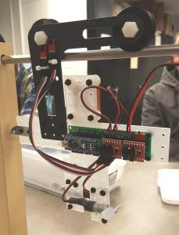
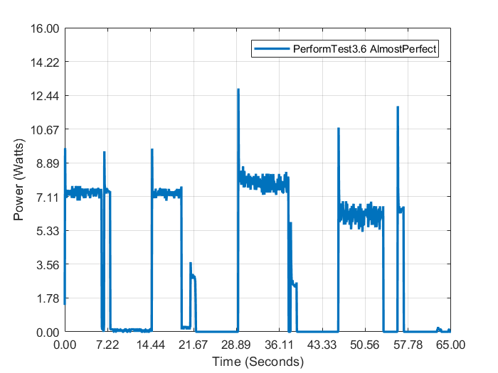

Advanced Energy Vehicle
Concepts/Software/Languages:
Our goal is to design a new method of transportation in Columbus. As a collaboration of branches, we aim to create the most efficient, consistent and smart method of transportation from Linden to Easton and Polaris.
- source
The purpose of this project was to design a new method of transportation in Columbus. Each member of Dreese Data Systems was assigned to smaller team units to conduct individual research and collaborate. The team’s goal in constructing the Advanced Energy Vehicle (AEV) was to create the most efficient, consistent and smart method of transportation from Linden to Easton and Polaris [1].
The research of our team was performed in a period of preliminary research, followed by a period of advanced research and development. The first five weeks of AEV research was designed to develop a better understanding of how to run tests, provide analysis, and brainstorm ideas to improve efficiency and consistency in compliance with the Mission Concept Review (MCR). The last 5 weeks of the research and development were focused on motor configuration and track comparison. These topics were chosen because the team wanted to focus primarily on AEV consistency (track comparison) and energy efficiency (motor configuration).
The team tested the AEV’s forward and backward traveling capabilities at different motor angles and number of motors. Data of each run was collected, compared, and analyzed. From this research, the team learned that the vehicle was more efficient with one motor with forward polarity, regardless of angle. Finally, it was learned from other research as well as through testing that the battery voltage will slowly decrease at a constant rate with each run.
Based on the data, it was recommended that any AEV use two motors facing opposite directions, each only using forward polarity. This ensures the best efficiency and consistency.
The final AEV configuration is pictured below.
From there, the team began coding the program, using the Arduino Nano as a powering system for the motors.
The team tested many times to try and reduce the power output as much as possible. This can be seen in the graph below of our final performance test.
A more thorough description of this project can be seen on our project site.